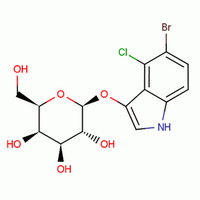

| Product Name | 5-bromo-4-chloroindol-3-yl-β-D-galactopyranoside |
| Synonyms | .beta.-D-Galactopyranoside 5-bromo-4-chloro-1H-indol-3-yl;5-Bromo-4-chloro-1H-indol-3- yl beta-D-galactopyranoside;5-Bromo-4-chloro-3-indolyl-.beta. -D-galactoside;5-Bromo-4-chloro-3-indolyl-b-D-galactoside; beta-D-Galactopyranoside, 5-bromo-4-chloro-1H-indol-3-yl;Xgal;X-GAL |
| Molecular Formula | C14H15BrClNO6 |
| Molecular Weight | 408.629 |
| CAS Registry Number | 7240-90-6 |
| Molecular Structure |  |
| Appearance | White to off-white crystalline powder |
| Purity (By HPLC) | Min 99%+ |
| Specific optical rotation | -61.5 ±3° ([α]D.20 (c=1,DMF:water,1:1) |
| Solubility | Soluble in DMF (5% w/v) and DMSO (20 mg/ml), |
| Water content (BY KF) | Max 0.5% |
| Melting Point | 237-239° (dec). |
| Storage | Shipped at Ambient Temperature. Store at +2 - 8°C. |
| Description | 5-Bromo-4-chloro-3-indolyl b-D-galactopyranoside (X-Gal) is a histochemical substrate for β-galactosidase. X-Gal is cleaved by β-galactosidase to yield an insoluble blue preceipitate. X-Gal is used to detect DNA insertions into the lacZ region of plasmid DNA, which causes the loss of β-galactosidase activity. |
| For Research Use Only | Not Intended for Diagnostic or Therapeutic Use. |
| Safety and Reference Information | PubChem CID: 65181 Merck Index : 14: 10074 |